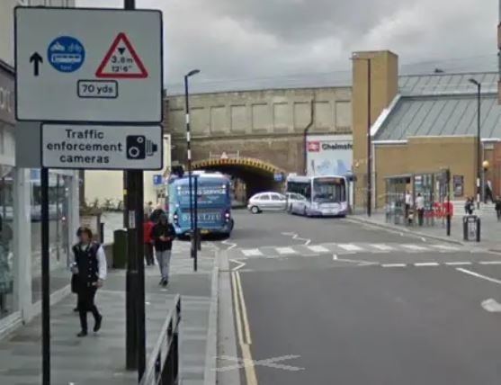

|
 previous / next column previous / next column
A PHYSICIST WRITES . . .
(February 2019)
Well, I seemed to be in a minority of one at last month's [Thames Valley] group meeting! Ryan Francis, the guest speaker, had arrived to talk about in-car driving aids - but one of the 'in-meeting presenting aids' (the screen) had been overlooked. While we waited for it to be delivered, Ryan took questions, and the first topic to be raised was cruise control. He said that he used this every day, though only on open and unbusy sections of road, and others agreed that if you were familiar with cruise control and employed it carefully, it was a good thing.
But I couldn't help remembering that in my July 2014 column I wrote about an investigation (using a driving simulator) that found that when cruise control was switched on, drivers showed a distinct drop in general attentiveness and in their ability to carry out particular manoeuvres. And the effects tended to worsen as the 'journey' continued.
Also, a recent study (of males, again in simulated driving) revealed a significant delay in braking response to a red light ahead when cruise control was on, or at least (in this more basic simulation), when the right foot was flat on the floor instead of applied to the accelerator pedal. Most of the delay was indeed attributed to the extra distance from the floor up to the brake pedal.
So I raised my hand to mention these findings, confessing that I had avoided using cruise control ever since seeing that first report in 2014. However, mine was a sole voice (sorry!): everyone else who chipped in said they were in favour of it, as long as you knew when not to cruise - in the wet, in traffic, on downhill stretches, on winding roads, if you're tired, and whenever you should be varying your speed.
Obviously I can't claim to be an experienced cruiser like other people, but I do have clear memories of the first year of owning my Golf and sometimes turning on the cruise control: it gave me an uncomfortable sense that the car was accelerating (it wasn't, of course) and that it was even manipulating me, to the extent that I felt reluctant to disconnect the control, for instance when catching up with a slightly slower vehicle, in the hope that it would get a move on first.
Even so, though I'm accustomed to being out of step with other people in various ways, perhaps on this particular topic I ought to be trying to analyse why... Maybe I should make a more serious attempt to put my cruise control to work for me!
I can perhaps summarize the rest of Ryan's most interesting coverage of driving aids by saying that they divided more or less into two groups. The first were the 'initials' - ABS which, if it ever kicks in, will probably frighten you with the noise it makes while maximizing your emergency braking and steering, and the other road-holding systems (DSC, DTC, ESP, ESC, TSC: see again my 2014 column) which you are not expected to understand at all. Ryan's firm advice was to aim to avoid getting into the situation of needing them, and not even to try to test them.
The other group consisted of screen-aids, notably satnav and the reverse-gear camera. With these it was good to be familiar with them but, again, not wise to rely on them. Satnav (I think Ryan said?) will get you from A to B mostly unfailingly, but when it does let you down, a real map (either beside you or else already in your head) is fairly essential. As for a reverse-camera, this may give you a helpful view directly to the rear, but it is no substitute for looking in all directions behind. And you won't pass the advanced test if you make use of it!
Last month, if you recall, I wrote watch this space, because a parliamentary Bill to ban coach tyres over ten years old was scheduled to be debated, after many delays (it arose from a fatal accident in 2012). But yet again, this didn't happen. However, there were some related developments last year, I've discovered:
> The campaign to ban such tyres, named simply Tyred (with a website www.tyred.org.uk), won a Northern Marketing Award for Best Not-for-Profit Campaign.
> The Dept for Transport announced new guidelines to operators of heavy vehicles, strongly advising that tyres more than ten years old should not be used except on rear axles as part of a twin-tyre combination. (This same 'discouragement' had in fact been issued to coach operators in 2013, following the accident.)
> Advice began to appear recommending (to all vehicle owners) that tyres should be replaced when they are six years old - and that's from the date of manufacture that's marked on the tyre, not from when it was fitted (which may have been much later, or not at all in the case of a spare wheel)!
It's hard to tell yet whether this last warning is based on actual evidence, or is simply a case of the tyre manufacturers combining with safety organizations in pressing their (different) interests. But there's no doubt that tyres do deteriorate internally and externally, regardless of the mileage they have covered.
And is there another component of your car that is as easy to forget all about (for example, when you are tempted to turn the steering-wheel on the spot) and yet so critical for your safety on the road? There ought to be a Nobel prize awaiting the person who invents an x-ray device for instantly checking tyre condition...
Lastly, what is a bus gate ? I've learnt that it's a short stretch of road restricted to buses only. One such in Chelmsford made £1.5m for Essex County Council in 18 months, from 54,000 motorists fined for going through! Though out of well over a hundred appeals (to tribunal) against the fine, the great majority were allowed. A successful appeal even made headlines this month, because it came from a scientific expert in the processing of visual information, who argued that there were too many road signs on the approach to the gate for her brain to absorb in time, before she had reached the point where she was committed to driving through it!

Taking a look at views of these signs on the internet, I can see that the first buses-only blue-circle that you pass is by no means the largest of them. And as they include standard two-arrow priority signs (one on each approach) and the 'gate' is simply a low railway bridge, is it surprising that some car-drivers assume it is OK to proceed? By the time you arrive at the large buses-only signs on the bridge itself, it's certainly too late to turn round, as the lady found.
Another thing: you would think that this low bridge must mean that Chelmsford buses are entirely single-decker, otherwise - well, you can imagine the risks. But not so. And I've found out that in 2013 a double-decker, or most of it, was indeed driven right through (without serious injuries, fortunately). I think the safest plan for this Chelmsford pinch-point would be to close it to buses and make it a car gate instead...
Peter Soul
previous / next column
|